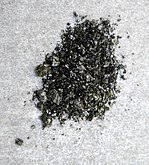

Copper is one of the oldest metals known to humanity, with a rich history dating back over 10,000 years. Known for its high thermal and electrical conductivity, this reddish-orange metal is a staple in electrical wiring, plumbing, and countless modern applications.
Copper’s combination of ductility, conductivity, and corrosion resistance makes it a fundamental material in construction, electronics, and even art. It's widely used in renewable energy technologies, and as an essential trace element, it plays a crucial role in human health.
An interesting thing about copper is the spectrum of colours it's salts provide in this table we have selected the most notable, and in our opinion the prettiest.
| Name | Chemical Formula | Anion | Image |
|---|---|---|---|
| Copper(I) oxide | Cu₂O | Oxygen | |
| Copper(I) hydride | CuH | Hydrogen | |
| Copper(II) sulfate | CuSO₄ | Sulfate | |
| Coper(II) oxide | CuO | Oxygen | |
| Copper(II) bromide | CuBr₂ | Bromide |  |
| Copper(II) oxychloride | Cu₂(OH)₃Cl | Hydroxide and chloride |